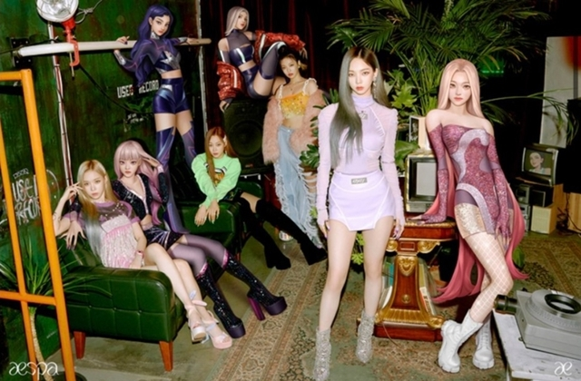

- 메타버스 란?
- 메타버스 산업
- 메타버스 미래
메타버스 산업-엔터

2020년 말 우리나라의 대표 엔터테인먼트 기업 중 하나인 SM은 아바타와 함께 활동하는 다국적 4인조 걸그룹 에스파(aespa)를 선보였다.
에스파는 현실 세계의 멤버들과 가상 세계의 아바타들이 공존한다는 독특한 세계관을 내세우며 데뷔 1년 만에 각종 음원 차트에서 상위권에 올랐다.
에스파의 멤버는 4명이지만 때로는 그들의 아바타와 함께 8명이 공연한다. 각 아바타의 이름은 멤버 개개인의 이름 앞에 ‘아이(æ)’를 붙이고, 아바타들로만 구성된 걸그룹은 아이-에스파(æ-aespa)로 부른다.
가상 세계에 존재하는 아이-에스파는 시간과 공간의 제약을 받지 않기 때문에 현실 세계의 에스파가 활동하지 못하는 영역에서도 활동 가능하다는 콘셉트이다.
기성 세대에게는 낯선 설정이지만, 메타버스 시대에 대응한 엔터테인먼트 업계의 새로운 시도임에 분명하다.